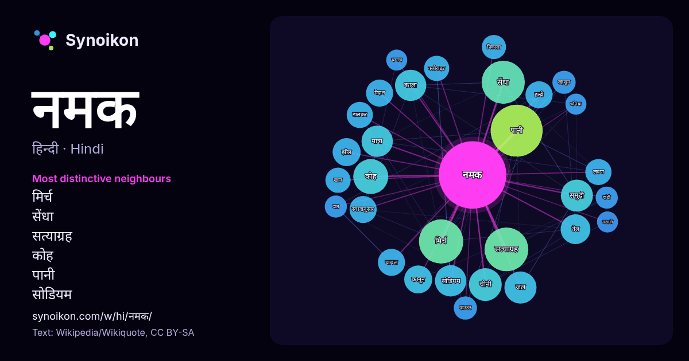

हिन्दी · आज के शब्दों की सूची
नमक
“salt” · विकिपीडिया, Wikiquote के 840 प्रयोगों में इसके आसपास मिले शब्द।

सबसे विशिष्ट पड़ोसी
- मिर्च 38×
- सेंधा 38×
- सत्याग्रह 37×
- कोह 25×
- पानी 22×
- सोडियम 19×
- काला 18×
- समुद्री 17×
- स्वादानुसार 16×
- हल्दी 15×
- चीनी 15×
- डालकर 14×
- लवण 14×
- चावल 13×
- क्लोराइड 13×
- तेल 13×
- झील 12×
- लहसुन 12×
- पाउडर 11×
- मैदान 11×
× = सामान्य विकिपीडिया टेक्स्ट की तुलना में कितने गुना अधिक।
सबसे अधिक आने वाले पड़ोसी
- पानी 55
- मिर्च 40
- सत्याग्रह 39
- सेंधा 38
- कोह 25
- भारत 23
- चीनी 22
- जल 21
- समुद्री 21
- काला 20
- मात्रा 20
- सोडियम 20
- उत्पादन 18
- तेल 18
- बनाया 18
- कानून 16
- झील 16
- चावल 15
- मैदान 15
- स्वादानुसार 15
संदर्भ में
- नमक या लवण (Common Salt) से साधारणतया भोजन में प्रयुक्त होने वाले लवण का बोध होता है। रासायनिक दृष्टि से यह सोडियम क्लोराइड (NaCl) है जिसका क्रिस्टल पारदर्शक Wikipedia snippets · साधारण नमक
- भौगोलिक दृष्टि से नमक के मैदान किसी खारी झील के स्थायी या अस्थायी रूप से सूख जाने पर बन जाते हैं। प्रायः यह बन्द जलसम्भर वाले क्षेत्रों में बनते हैं। Wikipedia snippets · नमक का मैदान
- सेंधा नमक, सैन्धव नमक, लाहौरी नमक या हैलाईट (Halite) सोडियम क्लोराइड (NaCl), यानि साधारण नमक, का क्रिस्टल पत्थर-जैसे रूप में मिलने वाला खनिज पदार्थ है। Wikipedia snippets · सेंधा नमक
- सेंधा नमक एक प्रकार का खनिज नमक (रॉक साल्ट) है जो पाकिस्तान के पंजाब प्रान्त के झेलम जिले के खेवरा खानों से निकलता है। यह थोड़ी लाली लिये हुए सफेद नमक होता Wikipedia snippets · हिमालयी नमक
- नमक हलाल 1982 में बनी हिन्दी भाषा की फ़िल्म है। इस फ़िल्म के निर्देशक प्रकाश मेहरा थे और संगीत बप्पी लाहिड़ी ने दिया था। इस फ़िल्म में मुख्य भुमिकायों Wikipedia snippets · नमक हलाल
- भारत में नमक पर कर आरंभिक काल से ही लगाया जाता रहा है। परंतु मुगल सम्राटों की अपेक्षा इस्ट इंडिया कंपनी के शासन काल में इसमें अत्यधिक वृद्धि कर दी गई। Wikipedia snippets · नमक कर
- काला नमक (बंगला : बिट लबन (বিট লবণ); नेपाली: बिरे नुन ; Hindi काला नमक ; गुजराती: સંચળ संचल) भारतीय उपमहाद्वीप में निर्मित और भारतीय भोजन में बड़े पैमाने Wikipedia snippets · काला नमक
- इस्लामाबाद से १६० किमी दूर स्थित नमक की एक प्रसिद्ध खान है जहाँ से सदियों से सेंधा नमक खोदकर निकाला जा रहा है। यह नमक कोह (नमक पर्वतों) की निचली पहाड़ियों Wikipedia snippets · खेवड़ा नमक खान
और शब्द
- इतिहास
- ईश्वर
- कार्य
- कुत्ता
- गर्मी
- गाना
- घंटी
- घड़ी
- घोड़ा
- चाय
- चित्रकला
- छाया
- जंगल
- जलवायु
- जीवन
- तूफ़ान
- दर्पण
- द्वीप
- नक्षत्र
- परिवार
- पहाड़
- पानी
- पैसा
- प्रकृति
- बगीचा
- बिल्ली
- भाषा
- भोजन
- माता
- मानचित्र
- मृत्यु
- मौन
- रेगिस्तान
- रेलगाड़ी
- रोटी
- वर्षा
- विज्ञान
- शक्ति
- शरद
- शहद
- शहर
- सड़क
- सत्य
- समय
- सर्दी
- सेतु
- स्वर्ण
- स्वास्थ्य
- हृदय
2026-10-09 को डिफ़ॉल्ट सेटिंग्स (±5 शब्द, मध्यम कॉर्पस) के साथ पहले से गणना की गई। इंटरैक्टिव मानचित्र इसे लाइव डेटा से ताज़ा कर सकता है।
मशीन-अनूदित इंटरफ़ेस; सुधारों का स्वागत है।